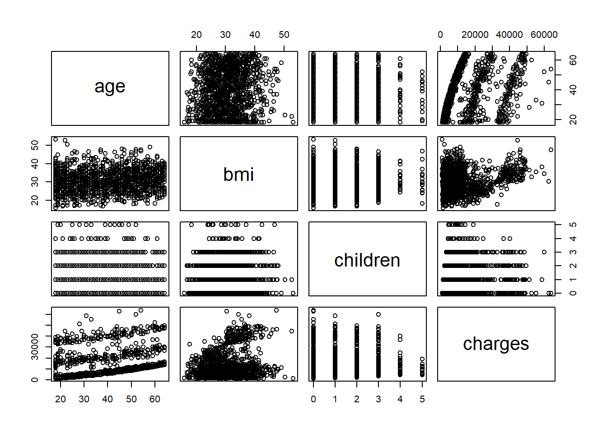
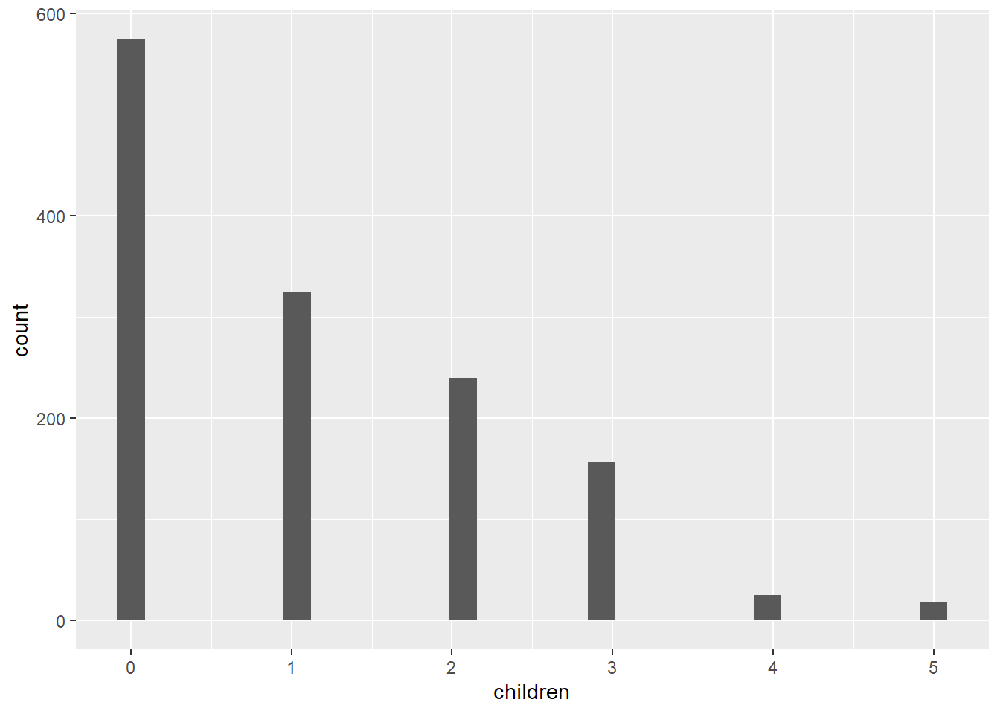
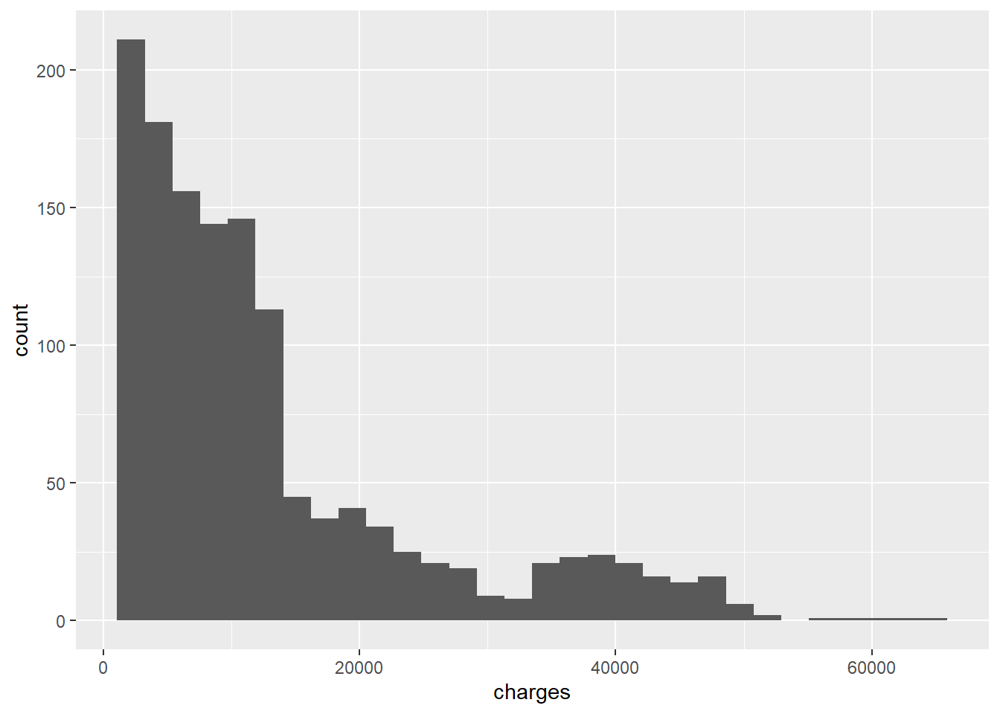
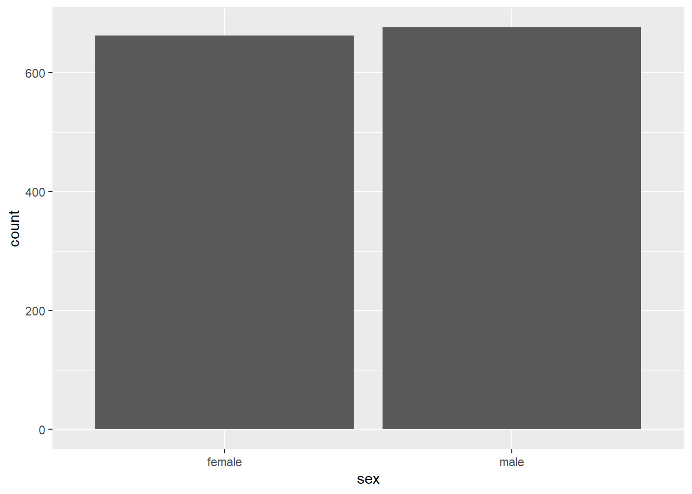
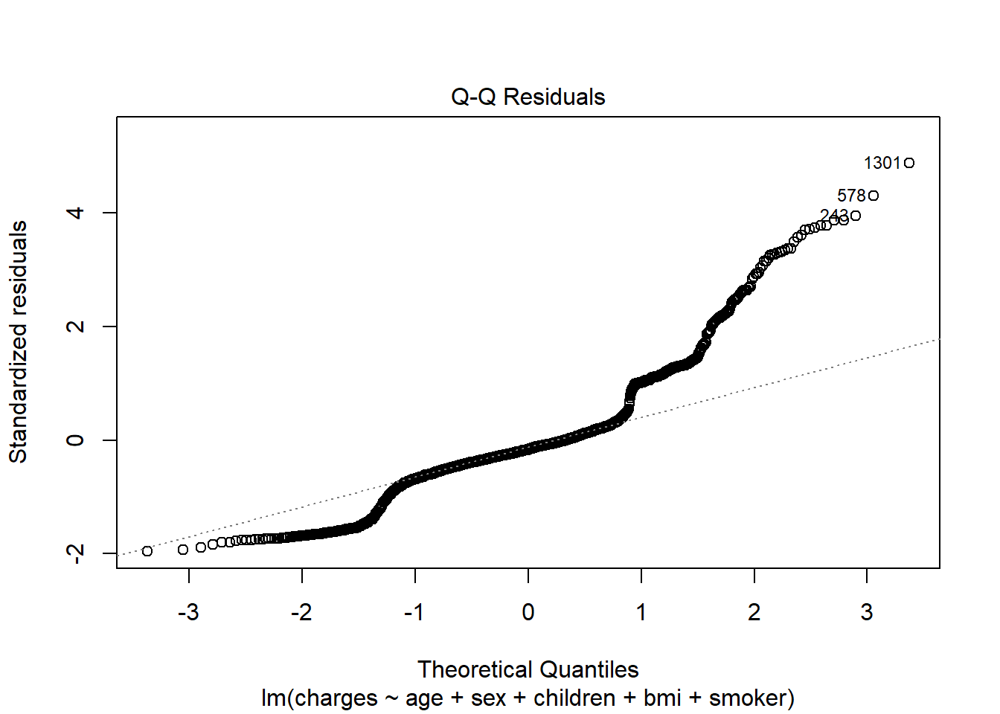
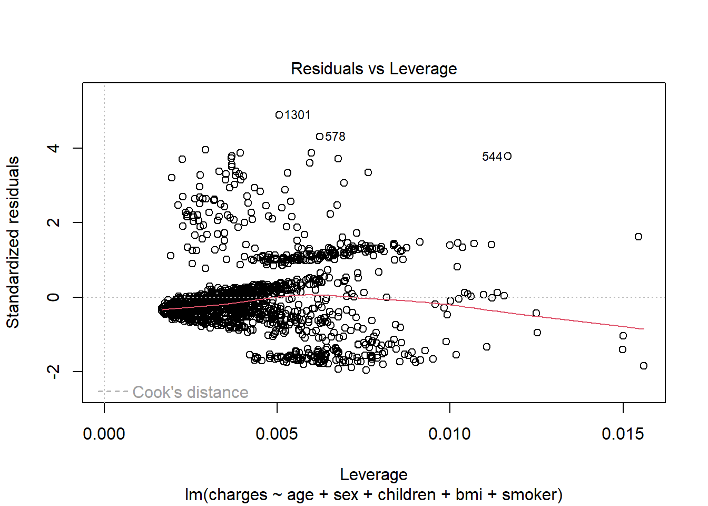

#loading necessary packages
library(tidyverse)
library(haven)
library(gtsummary)
library(corrplot)
library(knitr)
library(tidyr)
library(ggplot2)
library(broom)Assignment Multiple Linear Regression
Group members:
1) Muhammad Ruhaifi bin Muhammad Sabri (22305762)
2) Dzul Hairy bin Mohd Ramlan (22305758)
3) Nur Shuhaiza binti Supian (22306056)
4) Aziemah binti Nafsun (22305774)
5) Noor Nazli bt Din (22306061)
Workflow
Introduction
Research question
Methodology
Data Exploration
Perform Linear Regression Model
Model Assessment
Final Model Checking
Interpretation
Introduction
This was data from US Health Insurance Dataset comprise medical information and costs billed by health insurance companies. it contains six variables with 1338 observations:
- age: age of patient (continuous)
- sex: gender of the subjects (categorical : male, female)
- bmi: BMI of subject (continuous)
- children: Number of children covered by health insurance (continuous)
- smoker: smoking status of subject (categorical: no, yes)
- charges: individual medical costs billed by health insurance (continuous)
Research question
How are age, BMI, number of children, sex, and smoking status associated with health insurance costs (charges) in USD?
Methodology
We will use multiple linear regression model approach to analyse predictors to explain variation of health insurance cost in sample population. 1st model will consist of all independent variables (age, sex, BMI, children, and smoking status) and another model will be constructed by adding interaction term between age and smoking status as effect of age towards health insurance cost can be modified by individual’s smoking status. Model comparison will be executed using anova test to select the final model. Model assessment will be conducted by running the diagnostic plot and checking the model for any influential observation before final model is concluded.
Data Exploration
Load and inspect the data
# Load the dataset
library(readr)
insurance <- read_csv("insurance.csv")
# Inspect the data
str(insurance)spc_tbl_ [1,338 × 6] (S3: spec_tbl_df/tbl_df/tbl/data.frame)
$ age : num [1:1338] 19 18 28 33 32 31 46 37 37 60 ...
$ sex : chr [1:1338] "female" "male" "male" "male" ...
$ bmi : num [1:1338] 27.9 33.8 33 22.7 28.9 ...
$ children: num [1:1338] 0 1 3 0 0 0 1 3 2 0 ...
$ smoker : chr [1:1338] "yes" "no" "no" "no" ...
$ charges : num [1:1338] 16885 1726 4449 21984 3867 ...
- attr(*, "spec")=
.. cols(
.. age = col_double(),
.. sex = col_character(),
.. bmi = col_double(),
.. children = col_double(),
.. smoker = col_character(),
.. charges = col_double()
.. )
- attr(*, "problems")=<externalptr> summary(insurance) age sex bmi children
Min. :18.00 Length:1338 Min. :15.96 Min. :0.000
1st Qu.:27.00 Class :character 1st Qu.:26.30 1st Qu.:0.000
Median :39.00 Mode :character Median :30.40 Median :1.000
Mean :39.21 Mean :30.66 Mean :1.095
3rd Qu.:51.00 3rd Qu.:34.69 3rd Qu.:2.000
Max. :64.00 Max. :53.13 Max. :5.000
smoker charges
Length:1338 Min. : 1122
Class :character 1st Qu.: 4740
Mode :character Median : 9382
Mean :13270
3rd Qu.:16640
Max. :63770 head(insurance)# A tibble: 6 × 6
age sex bmi children smoker charges
<dbl> <chr> <dbl> <dbl> <chr> <dbl>
1 19 female 27.9 0 yes 16885.
2 18 male 33.8 1 no 1726.
3 28 male 33 3 no 4449.
4 33 male 22.7 0 no 21984.
5 32 male 28.9 0 no 3867.
6 31 female 25.7 0 no 3757.# Check for missing values
sum(is.na(insurance))[1] 0Data preparation
Convert categorical variables (sex and smoker) to factors:
insurance$sex <- as.factor(insurance$sex)
insurance$smoker <- as.factor(insurance$smoker)Check if levels are correct:
levels(insurance$sex)[1] "female" "male" levels(insurance$smoker)[1] "no" "yes"Exploratory data analysis (EDA)
Visualise relationships:
pairs(insurance[, c("age", "bmi", "children", "charges")])
Correlation between continuous variables:
cor_matrix <- cor(insurance[, c("age", "bmi", "children", "charges")])
#visualize the correlation matrix
corrplot(cor_matrix, method = "circle")no obvious correlation issue between continuous variables
Boxplots for categorical variables:
ggplot(insurance, aes(x = smoker, y = charges, fill = smoker)) +
geom_boxplot() +
labs(title = "Health Insurance Cost by Smoking Status", y = "Charges (USD)")Data Summary
Table Summary
insurance %>%
tbl_summary( label = list(age ~ "Age", sex ~ "Gender", bmi ~ "BMI" , children ~ "Number of Children", smoker ~ "Smoking Status", charges ~ "Health Insurance Cost (USD)") ,
statistic = list(all_continuous() ~ "{mean} ({sd})")) %>% bold_labels() %>%
italicize_levels()| Characteristic | N = 1,3381 |
|---|---|
| Age | 39 (14) |
| Gender | |
| female | 662 (49%) |
| male | 676 (51%) |
| BMI | 30.7 (6.1) |
| Number of Children | |
| 0 | 574 (43%) |
| 1 | 324 (24%) |
| 2 | 240 (18%) |
| 3 | 157 (12%) |
| 4 | 25 (1.9%) |
| 5 | 18 (1.3%) |
| Smoking Status | 274 (20%) |
| Health Insurance Cost (USD) | 13,270 (12,110) |
| 1 Mean (SD); n (%) | |
Data Visualization
For continuous data: We employ histograms to gain insight into the distribution of each feature. This allows us to understand the central tendency, spread, and shape of the dataset’s distribution.
Age
ggplot(insurance, aes (age))+ geom_histogram()BMI
ggplot(insurance, aes (bmi))+ geom_histogram()Number of Children
ggplot(insurance, aes (children))+ geom_histogram()
Health Insurance Cost (USD)
ggplot(insurance, aes (charges))+ geom_histogram()
For categorical data: Bar plots are utilized to visualize the frequency of each category. This provides a clear representation of the prominence of each category within the respective feature.
gender
ggplot(insurance, aes (sex))+ geom_bar()
smoking status
ggplot(insurance, aes (smoker))+ geom_bar()
Perform Linear Regression Model
Univariable analysis
age
SLR_age <- lm(charges ~ age, data = insurance) summary(SLR_age)Call: lm(formula = charges ~ age, data = insurance) Residuals: Min 1Q Median 3Q Max -8059 -6671 -5939 5440 47829 Coefficients: Estimate Std. Error t value Pr(>|t|) (Intercept) 3165.9 937.1 3.378 0.000751 *** age 257.7 22.5 11.453 < 2e-16 *** --- Signif. codes: 0 '***' 0.001 '**' 0.01 '*' 0.05 '.' 0.1 ' ' 1 Residual standard error: 11560 on 1336 degrees of freedom Multiple R-squared: 0.08941, Adjusted R-squared: 0.08872 F-statistic: 131.2 on 1 and 1336 DF, p-value: < 2.2e-16sex
SLR_sex <- lm(charges ~ sex, data = insurance) summary(SLR_sex)Call: lm(formula = charges ~ sex, data = insurance) Residuals: Min 1Q Median 3Q Max -12835 -8435 -3980 3476 51201 Coefficients: Estimate Std. Error t value Pr(>|t|) (Intercept) 12569.6 470.1 26.740 <2e-16 *** sexmale 1387.2 661.3 2.098 0.0361 * --- Signif. codes: 0 '***' 0.001 '**' 0.01 '*' 0.05 '.' 0.1 ' ' 1 Residual standard error: 12090 on 1336 degrees of freedom Multiple R-squared: 0.003282, Adjusted R-squared: 0.002536 F-statistic: 4.4 on 1 and 1336 DF, p-value: 0.03613bmi
SLR_bmi <- lm(charges ~ bmi, data = insurance) summary(SLR_bmi)Call: lm(formula = charges ~ bmi, data = insurance) Residuals: Min 1Q Median 3Q Max -20956 -8118 -3757 4722 49442 Coefficients: Estimate Std. Error t value Pr(>|t|) (Intercept) 1192.94 1664.80 0.717 0.474 bmi 393.87 53.25 7.397 2.46e-13 *** --- Signif. codes: 0 '***' 0.001 '**' 0.01 '*' 0.05 '.' 0.1 ' ' 1 Residual standard error: 11870 on 1336 degrees of freedom Multiple R-squared: 0.03934, Adjusted R-squared: 0.03862 F-statistic: 54.71 on 1 and 1336 DF, p-value: 2.459e-13number of children
SLR_children <- lm(charges ~ children, data = insurance) summary(SLR_children)Call: lm(formula = charges ~ children, data = insurance) Residuals: Min 1Q Median 3Q Max -11585 -8759 -4071 3468 51248 Coefficients: Estimate Std. Error t value Pr(>|t|) (Intercept) 12522.5 446.5 28.049 <2e-16 *** children 683.1 274.2 2.491 0.0129 * --- Signif. codes: 0 '***' 0.001 '**' 0.01 '*' 0.05 '.' 0.1 ' ' 1 Residual standard error: 12090 on 1336 degrees of freedom Multiple R-squared: 0.004624, Adjusted R-squared: 0.003879 F-statistic: 6.206 on 1 and 1336 DF, p-value: 0.01285smoking status
SLR_smoking <- lm(charges ~ smoker, data = insurance) summary(SLR_smoking)Call: lm(formula = charges ~ smoker, data = insurance) Residuals: Min 1Q Median 3Q Max -19221 -5042 -919 3705 31720 Coefficients: Estimate Std. Error t value Pr(>|t|) (Intercept) 8434.3 229.0 36.83 <2e-16 *** smokeryes 23616.0 506.1 46.66 <2e-16 *** --- Signif. codes: 0 '***' 0.001 '**' 0.01 '*' 0.05 '.' 0.1 ' ' 1 Residual standard error: 7470 on 1336 degrees of freedom Multiple R-squared: 0.6198, Adjusted R-squared: 0.6195 F-statistic: 2178 on 1 and 1336 DF, p-value: < 2.2e-16
Table Summary for Simple Linear Regression
#create a summary table for each model with confidence intervals
tbl_age <- tbl_regression(SLR_age, conf.level = 0.95)
tbl_sex <- tbl_regression(SLR_sex, conf.level = 0.95)
tbl_bmi <- tbl_regression(SLR_bmi, conf.level = 0.95)
tbl_children <- tbl_regression(SLR_children, conf.level = 0.95)
tbl_smoking <- tbl_regression(SLR_smoking, conf.level = 0.95)
#Combine all tables into one
SLR_table <- tbl_stack(
list(tbl_age, tbl_sex, tbl_children, tbl_smoking, tbl_bmi)
) %>%
as_gt() %>%
gt::tab_header(
title = "Simple Linear Regression Model"
)
#Print the summary table
SLR_table| Simple Linear Regression Model | |||
|---|---|---|---|
| Characteristic | Beta | 95% CI1 | p-value |
| age | 258 | 214, 302 | <0.001 |
| sex | |||
| female | — | — | |
| male | 1,387 | 90, 2,685 | 0.036 |
| children | 683 | 145, 1,221 | 0.013 |
| smoker | |||
| no | — | — | |
| yes | 23,616 | 22,623, 24,609 | <0.001 |
| bmi | 394 | 289, 498 | <0.001 |
| 1 CI = Confidence Interval | |||
Multiple Linear Regression without Interaction (Model A)
MLR_modelA <- lm(charges ~ age + sex + children + bmi + smoker,
data = insurance)
summary(MLR_modelA)
Call:
lm(formula = charges ~ age + sex + children + bmi + smoker, data = insurance)
Residuals:
Min 1Q Median 3Q Max
-11837.2 -2916.7 -994.2 1375.3 29565.5
Coefficients:
Estimate Std. Error t value Pr(>|t|)
(Intercept) -12052.46 951.26 -12.670 < 2e-16 ***
age 257.73 11.90 21.651 < 2e-16 ***
sexmale -128.64 333.36 -0.386 0.699641
children 474.41 137.86 3.441 0.000597 ***
bmi 322.36 27.42 11.757 < 2e-16 ***
smokeryes 23823.39 412.52 57.750 < 2e-16 ***
---
Signif. codes: 0 '***' 0.001 '**' 0.01 '*' 0.05 '.' 0.1 ' ' 1
Residual standard error: 6070 on 1332 degrees of freedom
Multiple R-squared: 0.7497, Adjusted R-squared: 0.7488
F-statistic: 798 on 5 and 1332 DF, p-value: < 2.2e-16Table Summary for Model A
tbl_regression(MLR_modelA) %>% add_glance_table(include = c(adj.r.squared)) %>%
bold_labels() %>% italicize_levels() %>% add_n() %>%
as_gt() %>%
gt::tab_header(title = "Multiple Linear Regression Model A",
subtitle = "Without Interaction")| Multiple Linear Regression Model A | ||||
|---|---|---|---|---|
| Without Interaction | ||||
| Characteristic | N | Beta | 95% CI1 | p-value |
| age | 1,338 | 258 | 234, 281 | <0.001 |
| sex | 1,338 | |||
| female | — | — | ||
| male | -129 | -783, 525 | 0.7 | |
| children | 1,338 | 474 | 204, 745 | <0.001 |
| bmi | 1,338 | 322 | 269, 376 | <0.001 |
| smoker | 1,338 | |||
| no | — | — | ||
| yes | 23,823 | 23,014, 24,633 | <0.001 | |
| Adjusted R² | 0.749 | |||
| 1 CI = Confidence Interval | ||||
Multiple Linear Regression with Interaction (Model B)
MLR_modelB <- lm(charges ~ age + sex + children + bmi + smoker + age:smoker,
data = insurance)
summary(MLR_modelB)
Call:
lm(formula = charges ~ age + sex + children + bmi + smoker +
age:smoker, data = insurance)
Residuals:
Min 1Q Median 3Q Max
-11810.1 -2880.5 -974.2 1402.7 29332.8
Coefficients:
Estimate Std. Error t value Pr(>|t|)
(Intercept) -11724.02 975.42 -12.019 < 2e-16 ***
age 248.77 13.30 18.703 < 2e-16 ***
sexmale -132.41 333.21 -0.397 0.691161
children 470.65 137.81 3.415 0.000657 ***
bmi 323.36 27.41 11.796 < 2e-16 ***
smokeryes 22101.68 1213.70 18.210 < 2e-16 ***
age:smokeryes 44.51 29.51 1.508 0.131721
---
Signif. codes: 0 '***' 0.001 '**' 0.01 '*' 0.05 '.' 0.1 ' ' 1
Residual standard error: 6067 on 1331 degrees of freedom
Multiple R-squared: 0.7501, Adjusted R-squared: 0.749
F-statistic: 666 on 6 and 1331 DF, p-value: < 2.2e-16Table Summary for Model B
tbl_regression(MLR_modelB) %>% add_glance_table(include = c(adj.r.squared)) %>%
bold_labels() %>% italicize_levels() %>% add_n() %>%
as_gt() %>%
gt::tab_header(title = "Multiple Linear Regression Model B",
subtitle = "With Interaction")| Multiple Linear Regression Model B | ||||
|---|---|---|---|---|
| With Interaction | ||||
| Characteristic | N | Beta | 95% CI1 | p-value |
| age | 1,338 | 249 | 223, 275 | <0.001 |
| sex | 1,338 | |||
| female | — | — | ||
| male | -132 | -786, 521 | 0.7 | |
| children | 1,338 | 471 | 200, 741 | <0.001 |
| bmi | 1,338 | 323 | 270, 377 | <0.001 |
| smoker | 1,338 | |||
| no | — | — | ||
| yes | 22,102 | 19,721, 24,483 | <0.001 | |
| age * smoker | 1,338 | |||
| age * yes | 45 | -13, 102 | 0.13 | |
| Adjusted R² | 0.749 | |||
| 1 CI = Confidence Interval | ||||
Model Selection
Model comparison using anova
anova(MLR_modelA,MLR_modelB)Analysis of Variance Table
Model 1: charges ~ age + sex + children + bmi + smoker
Model 2: charges ~ age + sex + children + bmi + smoker + age:smoker
Res.Df RSS Df Sum of Sq F Pr(>F)
1 1332 4.9073e+10
2 1331 4.8989e+10 1 83730735 2.2749 0.1317Since p-value is 0.1317, the interaction term does not significantly improve the model, thus simpler model (MLR_modelA) is chosen for ease of interpretation.
Model Assessment
We took Model A (MLR model without interaction) as our preliminary model
prelim.final.m <- lm (charges ~ age + sex + children + bmi + smoker,
data = insurance)a. Diagnostics plots
Plot 1
plot(prelim.final.m,which=1)Comment:
Plot 2
plot(prelim.final.m,which=2)Comment:
Plot 3
plot(prelim.final.m,which=3)Comment:
Plot 4
plot(prelim.final.m,which=5)Comment:
b. Plot residuals against numerical independent variables (eg : age, number of children, and BMI) in the model to check for individual linearity.
- residual vs age
augment(prelim.final.m) %>%
ggplot(aes(x = age, y = .resid))+
geom_point()+
geom_smooth()
residual vs number of children
augment(prelim.final.m) %>% ggplot(aes(x = children, y = .resid))+ geom_point()+ geom_smooth()residual vs BMI
augment(prelim.final.m) %>% ggplot(aes(x = bmi, y = .resid))+ geom_point()+ geom_smooth()